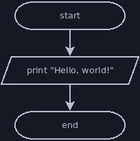
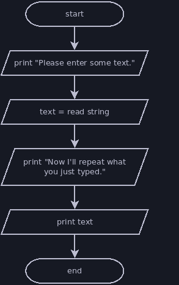

Week 4
Control Flow
At this point, you can write very limited interactive programs. You're still missing two tools necessary to write arbitrarily complex code, and we're about to cover them: selection (choose which code to run next) and iteration (repeat the same piece of code). Java has multiple constructs for performing selection and iteration, but we'll just focus on two for now.
Selection: If Statements
An if statement allows you to select one of two different code blocks to execute. It requires a condition (a boolean expression) to select which block to run.
if (condition) {
// code in this block runs if condition is true
} else {
// code in this block runs if condition is false
}
Iteration: While Loops
A while loop allows you to repeat a block of code for as long as its condition remains true. Like an if statement, a while loop's condition must be a boolean expression.
while (condition) {
// code in this block will repeat while condition is true
}
It is possible for a while loop to repeat indefinitely if the condition remains true. This is called an infinite or indefinite loop. If your program appears stuck in a loop while running in the terminal, then pressing ctrl + c will usually cancel it and return you to the normal terminal prompt. For Mac users: I believe the shortcut is still ctrl + c on your computer, not cmd + c.
Boolean Expressions
A boolean expression is an expression that, when evaluated results in a boolean
value (true or false). You can use the following comparison operators to
write boolean expressions:
| Operator | Purpose |
|---|---|
> | Greater than |
>= | Greater than or equal to |
< | Less than |
<= | Less than or equal to |
== | Equal to |
!= | Not equal to |
Note that an equality comparison uses ==, not =. A single equal sign
represents an assignment statement, which is completely different from a
comparison. If you mix these up, your code will usually not run.
Try typing the following boolean expressions into jshell and predicting the results:
4 > 2 + 2
4 >= 2 + 2
10 < 10 * 10
3 <= 2
0.3 == 0.1 + 0.1 + 0.1
0.3 != 0.1 + 0.1 + 0.1
Just like other expressions, you can store the result of a boolean expression in a variable:
void main() {
boolean a = 4 < 5;
boolean b = 1 == 2;
println("a = " + a);
println("b = " + b);
Flowcharts
Now that we're introducing selection and iteration, it's helpful to visually represent the steps in our program. We'll use flowcharts to do this. The following sections will cover flowcharts along with some example programs demonstrating the use of if statements and while loops.
A flowchart is a sequence of instructions that must be followed in order. They can become a little more complex when we start adding branching and referencing other flowcharts, but the flowchart still just gives us instructions and tells us the order in which to follow those instructions.
Symbols
Here are some of the symbols you'll see in my flowcharts:
- Terminators: the capsule shapes mark the start/end of a flowchart
- I/O Instructions: parallelograms indicate an instruction that performs input or output
- Process Instructions: rectangtles represent most other instructions that do not involve input or output
- Arrows: each part of a flowchart is connected to one or more others by arrows
- Lines: if the flowchart reads left to right, top to bottom, then the arrows can be left off the connections

Reading a Flowchart
Beginning with the start terminator, each instruction in the flowchart is performed in sequence. Below are several examples followed by equivalent Java programs.

void main() {
println("Hello, world!");
}

void main() {
String text = readln("Please enter some text. ");
println("Now I'll repeat what you just typed.");
println(text);
}
void main() {
int birthYear = Integer.parseInt(readln("Please enter the year you were born. "));
int currentYear = Integer.parseInt(readln("Please enter the current year. "));
int maxAge = currentYear - birthYear;
int minAge = maxAge - 1;
println("You are either " + minAge + " or " + maxAge + " years old.");
}
Note that this last flowchart left out the details of what text the program should print. Instead, the output instructions focused on the purpose of the output. This is usually fine; the purpose of our flowchart is to show the structure of our code, not specify the exact details of its input and output.
Decision Points
Decision points allow our flowchart to branch in multiple directions, and the condition in the decision point determines which branch we follow. All branches eventually converge and lead to the flowchart's end terminator.
A diamond shape represents a decision or branching point. The text in this symbol states the condition, which can usually be true or false. Each branch coming from this symbol is labelled with the result that would cause the program to follow that branch (again, usually true or false).

Selection vs Iteration
There are two ways we can use decision points: selection and iteration.
- Selection: the decision point chooses which instruction(s) to perform next, but these do not lead back to earlier parts of the flowchart.
- Iteration: the decision point chooses whether to follow a branch that leads back to an earlier part of the flowchart or to continue towards the end of the flowchart. Iteration allows us to repeat instructions multiple times until a condition is met.
Selection Examples
The flowcharts below demonstrate selection. The equivalent Java programs are also shown after each flowchart.

void main() {
int five = Integer.parseInt(readln("Please type the number 5."));
if (five == 5) {
println("Thank you for typing 5.");
} else {
println("Error: you didn't type 5.");
}
}

void main() {
double num = Double.parseDouble(readln("Please enter a number."));
if (num > 0) {
println(num + " is a positive number.");
} else {
if (num < 0) {
println(num + " is a negative number.");
} else {
println(num + " is zero, which is neither positive nor negative.");
}
}
}
Iteration Examples
The flowcharts below demonstrate iteration. The equivalent Java programs are also shown after each flowchart.

void main() {
int five = Integer.parseInt(readln("Please type the number 5."));
while (five != 5) {
five = Integer.parseInt(readln("Error: you didn't type 5. Try again.");
}
println("Thank you for typing 5.")
}

void main() {
int countdown = Integer.parseInt(
readln("Please type a positive integer to start the countdown."));
while (countdown > 0) {
println(countdown + "!");
--countdown;
}
}